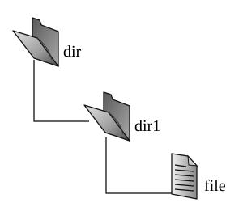

2026-46
文件系统基础某基于索引节点（inode）的文件系统的目录项由文件名和索引节点号构成。磁盘中存放了索引节点表、位图、目录等元数据以及文件数据，盘块大小为 4 KB，盘块号占 4 B。索引节点表包含了所有文件的索引节点，位于从 100 号盘块开始的 4096 个连续盘块中，索引节点号是索引节点在该表中的序号，从 0 开始编号。每个索引节点占 128 B，包含直接地址项 5 个，一次间接地址项、二次间接地址项、三次间接地址项各 1 个。磁盘块位图和索引节点位图分别用于描述磁盘块和索引节点占用情况，0 表示未占用，1 表示已占用。某子目录树如题 46 图所示，其中各文件的文件名和索引节点号如题 46 表所示，file 大小为 30 KB。

题 46 表
| 文件名 | 索引节点号 |
|---|---|
| dir | 100 |
| dir1 | 201 |
| file | 1000 |
请回答下列问题。
（1）file 的索引节点存放在磁盘的几号盘块中？若 file 的索引节点已读入内存，则访问 file 中偏移地址为 21460 的一个字节数据，最多需要访问几个盘块？该文件系统在空间足够大的磁盘中最多能创建多少个文件？（3 分）
（2）若要删除目录 dir1，则文件系统需要对哪些元数据执行哪些操作？（5 分）
（1）file 的索引节点存放在磁盘的 ⌊10004096/128⌋+100=131 号盘块中。访问 file 中偏移地址为 21460 的一个字节数据，最多需要访问 2 个盘块。该文件系统在足够大的磁盘中最多能创建 4096×(4096/128)=128K=131072 个文件。
（2）将盘块位图中 dir1 占用的盘块所对应的位修改为 0，将盘块位图中 file 占用的盘块所对应的位修改为 0，将盘块位图中 file 索引节点中的一次间接地址指向的盘块所对应的位修改为 0，将索引节点位图中 dir1 的索引节点（201）所对应的位修改为 0，将索引节点位图中 file 的索引节点（1000）所对应的位修改为 0，删除目录文件 dir 中与 dir1 对应的目录项。
本题讲解：inode 定位、一次间接访盘与删除目录的元数据操作
第 0 步：底层机制——这套文件系统怎么"记账"
三类记账结构，访问与删除的每一步都由它们决定：
- 索引节点表：所有 inode 顺序排布在从 100 号盘块开始的 4096 个连续块中，inode 号 = 表内序号（从 0 起）——定位 inode 是纯算术：表首位置 + 序号 × 128B。
- 两张位图：盘块位图、inode 位图，1=占用 0=空闲。它们是"谁被占用"的唯一权威——释放空间 = 清位，旧数据不必擦：位不清，块永远不会再被分配；位清了，旧数据留在盘上也无所谓。
- 目录：目录项 =（文件名，inode 号），名字与实体分离——文件全部的位置信息（直接地址项 5 个，一/二/三次间接地址项各 1 个）都记在 inode 里。
预答一个总问题：为什么删除操作只动位图和目录，不擦数据块？ 分配器判断"哪块空闲"只看位图；把位清 0 空间就算回收，擦旧数据是多余动作。
第（1）问（3 分）
① file 的 inode 在几号盘块。 inode 1000 前面排着 1000 个 inode（号从 0 起，偏移按 1000×128 算而不是 1001×128），表内字节偏移 1000×128 = 128000 B；每块 4096 ÷ 128 = 32 个 inode，128000 B 落在表内第 ⌊128000/4096⌋ = 31 个相对块；表首在 100 号块 → 绝对块号 100+31 = 131。
| 步骤 | 算式 | 结果 |
|---|---|---|
| 每块装多少 inode | 4096 ÷ 128 | 32 个 |
| 表内字节偏移 | 1000 × 128 | 128000 B |
| 表内相对块号 | ⌊128000 ÷ 4096⌋ | 31 |
| 绝对盘块号 | 100 + 31 | 131 |
② 访问偏移 21460 的字节最多访盘几次。 机制链：字节偏移 → 逻辑块号 → 地址项映射。21460 ÷ 4096 = 5 余 980 → 逻辑块 5（21460 < 30KB，访问合法）；直接地址项 5 个只覆盖逻辑块 0~4（字节 0~20479），块 5 落在一次间接区——要先读 inode 的"一次间接地址项"指向的间接地址块（数据块号存在它里面），再读数据块。inode 已在内存（题设），省掉了读 inode 本身那一次 → 最多访问 2 个盘块（间接块 1 次 + 数据块 1 次）。
③ 最多能创建多少文件。 每个文件对应一个 inode → 文件数上限 = inode 总数 = 4096 块 × 32 个/块 = 128K = 131072 个。题设磁盘与位图空间足够大，唯一瓶颈就是 inode 表——创建文件时分配的正是 inode。
第（2）问（5 分）：删除 dir1 要对哪些元数据做什么
机制先行——删除目录 = 拆断"名字 → inode → 盘块"整条链，且要顺着子树拆到底（dir1 下面还挂着 file）：
- 摘名字：目录文件 dir 中 dir1 的目录项删除——名字链从这里断开；
- 释放 dir1 自己的空间：dir1 的目录文件（里面存着 file 的目录项）占用的盘块 → 盘块位图清 0；
- 释放 file 的空间：file 的数据块（30 KB 占 8 个数据块）→ 盘块位图清 0；file 的 inode 中一次间接地址指向的间接块（8 > 5，逻辑块 5~7 挂在一次间接下，这个间接块确实存在）→ 盘块位图清 0；
- 释放 inode：dir1 的 inode 201、file 的 inode 1000 → inode 位图清 0。
| 元数据 | 操作 |
|---|---|
| 盘块位图 | dir1 占用的盘块所对应的位修改为 0 |
| 盘块位图 | file 占用的盘块所对应的位修改为 0 |
| 盘块位图 | file 的索引节点中一次间接地址指向的盘块所对应的位修改为 0 |
| 索引节点位图 | dir1 的索引节点（201）所对应的位修改为 0 |
| 索引节点位图 | file 的索引节点（1000）所对应的位修改为 0 |
| 目录文件 dir | 删除与 dir1 对应的目录项 |
为什么 dir 的 inode（100）与其位图位不动：删除的是 dir1 子树，dir 还活着。为什么不用单独删 file 的目录项：它住在 dir1 的目录文件里，dir1 的内容盘块整块回收，它随之消失。
易错点
- inode 定位忘加表首：只算出相对块 31，忘了 +100 得 131。
- 偏移多乘一次：inode 号从 0 起，偏移按 1000×128 算，不是 1001×128。
- 直接区范围算错：5 个直接项只管前 20480 字节，21460 已越界进一次间接区——访盘 2 次而非 1 次。
- 删除漏项：最容易漏"一次间接地址指向的盘块"的位图回收与"父目录 dir 中的目录项"两处。
结论：（1）file 的 inode 在 131 号盘块；访问偏移 21460 最多访盘 2 次；最多建 128K=131072 个文件；（2）盘块位图 3 处、inode 位图 2 处清 0，并删除 dir 中 dir1 的目录项。